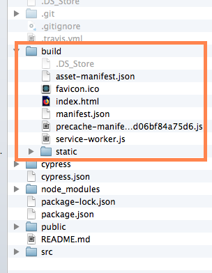
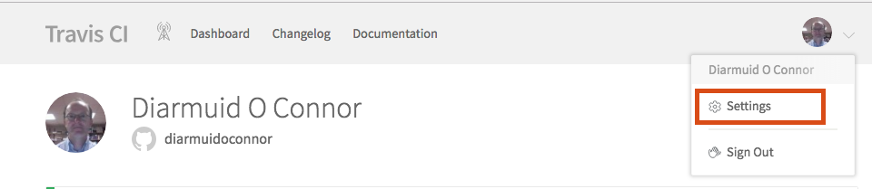
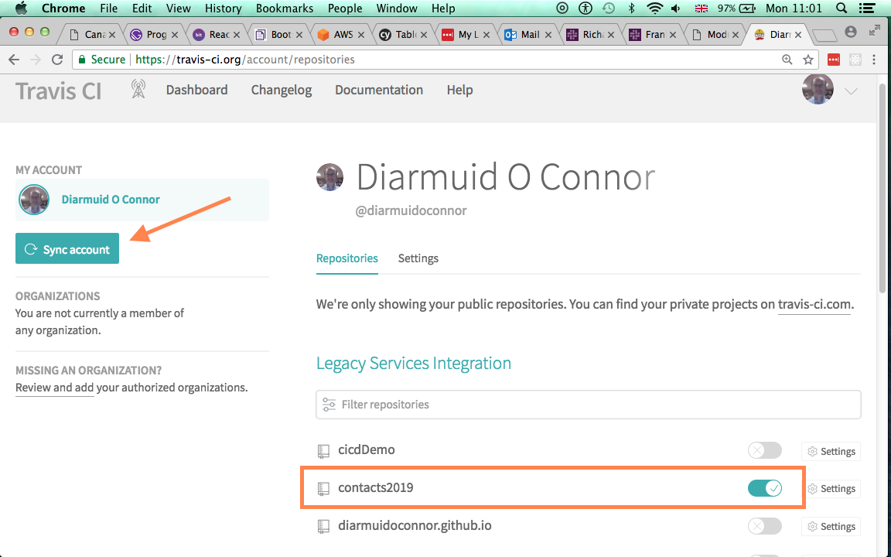
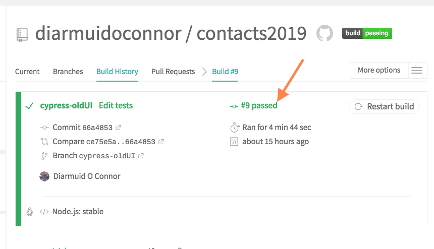
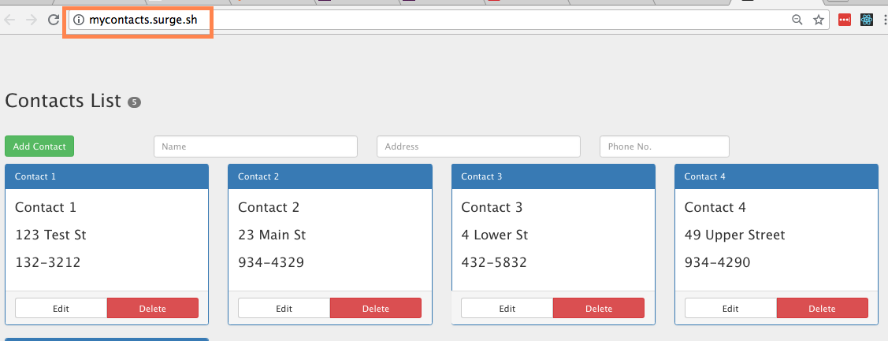
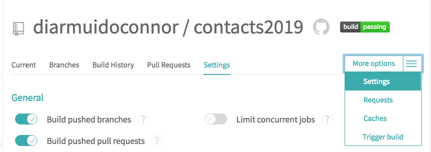
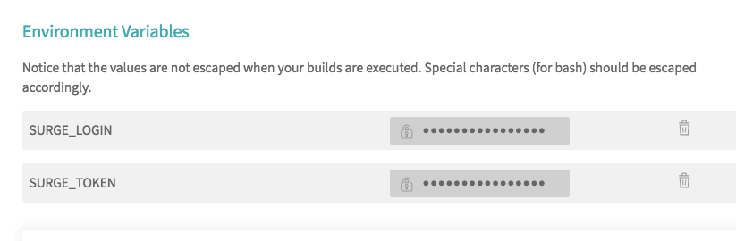
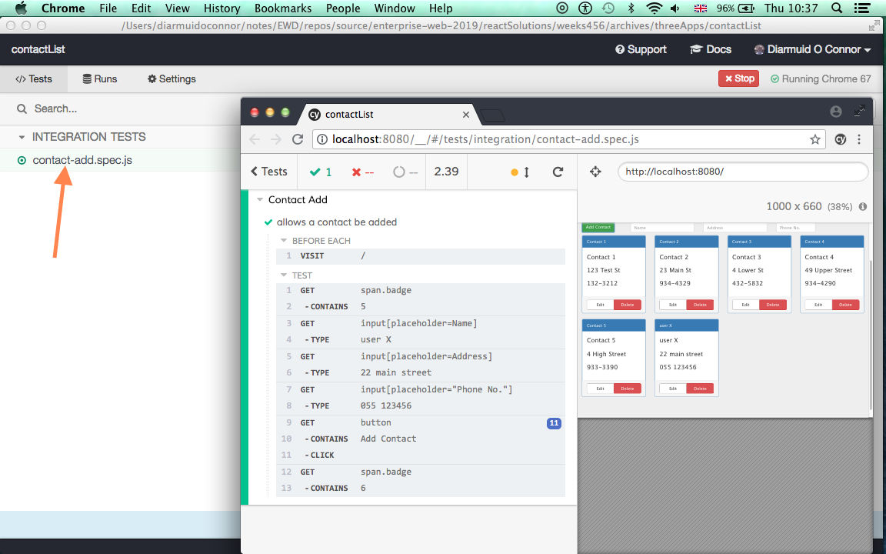

Create a continuous integration and deployment (CI/CD) pipeline for an Enterprise Web development project.
We will be using the following cloud-based services:
The Contact List app will be used as the context for this lab exercise. In normal circumstances the SPA and Web API would both be deployed, albeit on different platforms, e.g. SPA on Surge, API on Heroku. For convenience we are using a standalone version of the Contact List SPA - it is using a stub API.
Download the source code required from here. In a terminal window, go to the base folder (cicdLab) and install the required packages:
$ npm installCreate a local Git repo:
$ git init
% git add -A
$ git commit -m "Fully functional app"Build a static version of the SPA:
$ npm run buildThe new build sub-folder contains the generated static version (a deployable version).

We need a standard web server to test the static app. In an earlier lab we installed httpserver ($ npm install httpserver -g). In the terminal window start the server from the build folder:
$ cd build
$ httpserver -p 8080In the browser navigate to: http://localhost:8080/. The app should function as before.
On GitHub, create a new repo, called contacts2019. Make it a remote for this project (cd to the base folder first):
$ git remote add origin https://github.com/[.. your username ...]/contacts2019.git
$ git push origin master Any generated files should never be stored in a repository. We have already included the build folder in .gitignore to safeguard against this.
Create an account on Travis CI, using your GitHub credentials for authentication. On Travis, navigate to your Settings page:

Click the Sync Account button on the left (Sync with GitHub) and turn on the contacts2019 repo, as illustrate below:

This has created a 'web hook' between GitHub and Travis. Github will notify Travis when a push event occurs on the repository (see later).
In the base folder create a file named .travis.yml and set its content to the following:
dist: trusty
language: node_js
node_js:
- stable
script:
- npm run buildWe will expand the content of this file later in the lab. NOTE: The YAML syntax is sensitive to incorrect indentation and alignment so take care to type it as prescribed in the snippets provided.
Travis uses this file to compile the set of instructions it gives to the worker VM that performs the app build process. The first line in the file indicates the version of Ubuntu it requires the VM to install. The next few lines causes the VM to install the Node platform. The script section specifies the build steps.
Commit and push to GitHub:
$ git add -A
$ git commit -m "First Travis builds"
$ git push origin masterThe web hook between GitHub and Travis means a 'git push' operation will initiate a build by Travis on a worker VM. Our simple build only involved:
package.jsonIn a web browser, navigate to your Travis account and select this project's build page. Make sure the overall build outcome is recorded as passed before continuing.

Travis sends an email (to the email address associated with your GitHub account) on every change in the build status. We will configure it to only email on build failure. Modify .travis.yml as follows:
. . . as before . . .
node_js:
- stable
notifications:
email:
recipients:
- one@example.com # change to your own address
- other@example.com # use other (optional)
on_success: never # default: change
on_failure: always # default: always
script:
. . . as before . . . Commit locally (no need to push to GitHub yet):
$ git add -A
$ git commit -m "Notify on build failure only"We will use the Surge platform to host our React app. Ultimately we want deployment to occur automatically when a Travis build has passed, however, the initial deployment must be manual. Install the Surge CLI:
$ npm install -g surgeWe deploy the static/production version of the app. From the base folder type:
$ surge ./buildIf you have not previously used Surge it will how prompt you to create an account. Then it detects the project you want to deploy - confirm this. It suggests a domain name for you website but you can override if you wish. Hit return and Surge takes care of the rest. In the browser navigate to the new site, for example:

Subsequent deployments can now be automated. In .travis.yml add a deploy section:
. . . as before . . .
script:
- npm run build
deploy:
provider: surge
skip_cleanup: true
domain: your-domain.surge.sh
project: ./build/
on:
branch: masterMake sure to change the domain property above to your chosen name. We need to give Travis permission to deploy to Surge. From the base folder, generate a token for this app:
$ surge tokenOn Travis, go to the app's base page and select the 'Settings' view.

Scroll down to the 'Environment Variables' section and declare two variables, SURGE_LOGIN (your email address) and SURGE_TOKEN (from above):

To prove the deployment will work, make a small change to the app. For example, in src/components/header.js change the header as shown below:
<h2>My Private Contact List <span className="badge"> {this.props.noContacts}</span></h2>Push to GitHub to trigger the CI/CD process:
$ git add -A
$ git commit -m "First auto-deploy"
$ git push origin masterIn the browser, go to your Travis account and wait until the build is completed. Assuming it 'passed', scroll to the bottom of the build console output and notice the app was deployed. Now browse to the app on Surge and it should reflect the change we made to the header.
We should really develop some tests for the app and only deploy if those tests pass. We will use the Cypress testing framework - already installed from package.json.
Start the Cypress interactive test runner:
$ npx cypress openAs this is the first run it creates a folder structure for your test code - see cicdLab/cypress. In cicdLab/cypress/integration/examples their are lots of coding examples for reference purposes. Remove this folder (or make a copy if you wish to learn more about Cypress later). Stop the test runner.
Create cicdLab/cypress/integration/contacts-add.spec.js and paste in this code:
describe("Contact Add", () => {
beforeEach(() => {
cy.visit("/");
});
it("allows a contact to be added", () => {
cy.get("span.badge").contains("5");
cy.get("input[placeholder=Name]").type("user X");
cy.get("input[placeholder=Address]").type("22 main street");
cy.get('input[placeholder="Phone No."]').type("055 123456");
cy.get("button")
.contains("Add Contact")
.click();
cy.get("span.badge").contains("6");
});
});Cypress uses cypress.json for configuration. Add the following entry to it:
{
"baseUrl": "http://localhost:8080/"
}In the test code we have the command:
cy.visit("/")
Our configuration causes this command to visit: http://localhost:8080/. We must ensure the app is accessible from this URL before running the test. Start the web server:
$ cd build
$ httpserver -p 8080In a second terminal start the test runner (from the base folder):
$ npx cypress openClick the test name on the left to run it.

Assuming the test result is 'green' (success), we should now get our CI build to include testing. However, Travis must use the headless test runner instead of the interactive one. Replace the content of .travis.yml with the following:
dist: trusty
language: node_js
node_js:
- "stable"
notifications:
email:
recipients:
- one@example.com # change to your own address
- other@example.com # use other (optional)
on_success: never # default: change
on_failure: always
cache:
directories:
- node_modules
before_script:
- npm install -g httpserver
- npm run build
- cd build && httpserver -p 8080 &
script:
- npx cypress run
deploy:
provider: surge
skip_cleanup: true
domain: mycontacts.surge.sh
project: ./build
on:
branch: cypress-oldUI[You must change the relevant lines according to your profile.]
In the 'before_script' section we install httpserver, build the app and start the server in background mode (&). In the 'script' section we simply execute the tests. Only if the tests are successful will the deployment take place.
Push this to GitHub:
$ git add -A
$ git commit -m "Include E2E testing in build process"
$ git push origin masterOn Travis, examine the log from the VM and notice the tests are executed and deployment happens. As an experiment, modify cypress/integration/contacts-add.spec.js to force a test fail. For example, change the last line to :
cy.get("span.badge").contains("10");
Push this to GitHub:
$ git add -A
$ git commit -m "Experiment: Failing test"
$ git push origin masterThis time the build fails and no deployment occurs.
UNDO THE TEST CODE CHANGE and push to Github again.
Create the file cypress/integration/contact-delete.spec.js and add this code:
describe("Contact Delete", () => {
beforeEach(() => {
cy.visit("/");
});
it("allows a contact to be deleted", () => {
cy.get("div.panel-body").should("have.length", 5);
cy.get(":nth-child(2) > .panel")
.find(".panel-footer")
.find("button")
.contains("Delete")
.click();
cy.get(":nth-child(2) > .panel")
.find(".panel-footer")
.find("button")
.contains("Confirm")
.click();
cy.get("div.panel-body").should("have.length", 4);
});
it("allows a delete operation to be cancelled", () => {
cy.get("div.panel-body").should("have.length", 5);
cy.get(":nth-child(2) > .panel")
.find(".panel-footer")
.find("button")
.contains("Delete")
.click();
cy.get(":nth-child(2) > .panel")
.find(".panel-footer")
.find("button")
.contains("Undo")
.click();
cy.get("div.panel-body").should("have.length", 5);
});
});Create the file cypress/integration/contacts-edit.spec.js and paste in the following:
describe("Contact Edit", () => {
beforeEach(() => {
cy.visit("/");
});
it("allows a contact's address be edited", () => {
cy.get("div.panel-body").should("have.length", 5);
let button = cy
.get(":nth-child(2) > .panel")
.find(".panel-footer")
.find("button")
.contains("Edit");
button.click();
let address = cy.get(":nth-child(2) > .panel").get("input:nth-child(2)");
address.clear();
address.type("22 low Street");
cy.get(":nth-child(2) > .panel")
.find(".panel-footer")
.find("button")
.contains("Save")
.click();
cy.get(":nth-child(2) > .panel")
.get("p:nth-child(2)")
.should("contain", "22 low Street");
});
it("allows a contact's address edit be cancelled", () => {
cy.get("div.panel-body").should("have.length", 5);
let button = cy
.get(":nth-child(2) > .panel")
.find(".panel-footer")
.find("button")
.contains("Edit");
button.click();
let address = cy.get(":nth-child(2) > .panel").get("input:nth-child(2)");
address.clear();
address.type("22 low Street");
cy.get(":nth-child(2) > .panel")
.find(".panel-footer")
.find("button")
.contains("Cancel")
.click();
cy.get(":nth-child(2) > .panel")
.get("p:nth-child(2)")
.should("not.contain", "22 low Street");
});
});Run the tests locally first, using the interactive runner:
$ npx cypress openNow commit:
$ git add -A
$ git commit -m "Added tests for edit and delete operations"
$ git push origin master Chech Travis to ensure it passed and deployed.